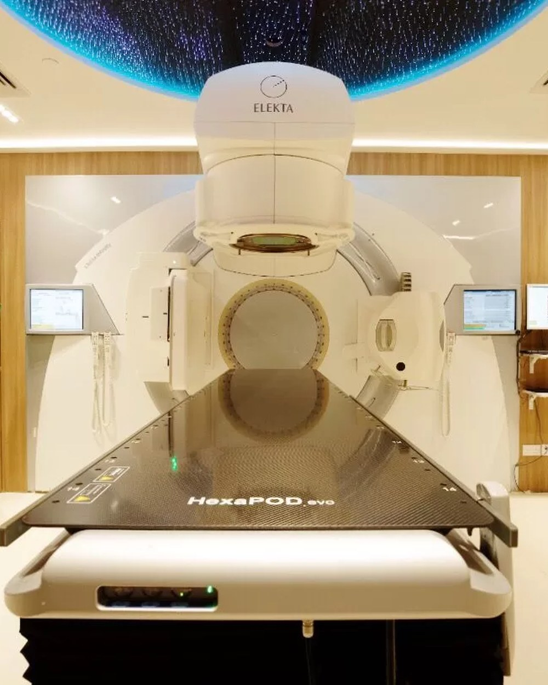
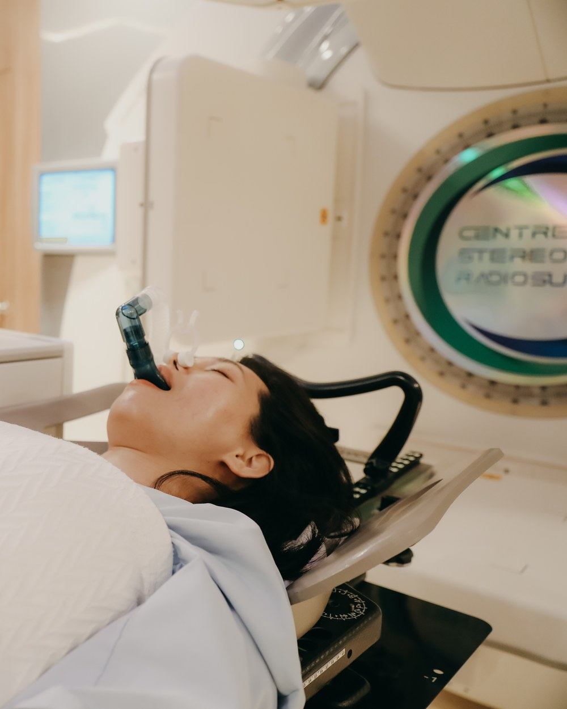
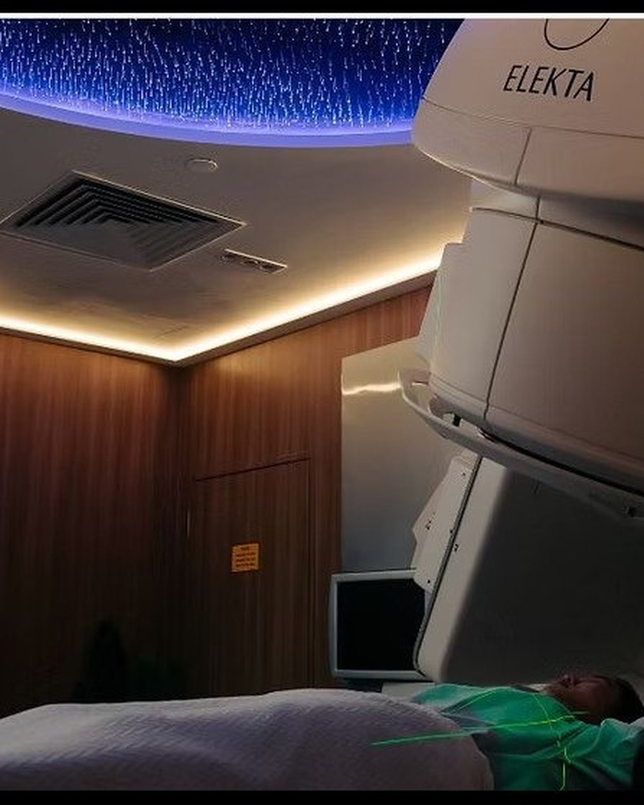
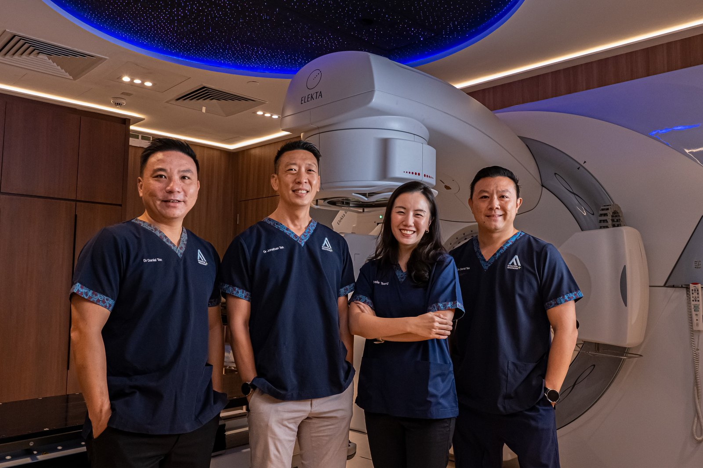

A new lump
Any new lump or thickening in the breast or armpit, even if painless. The most common first sign of breast cancer.
It is the most common cancer in Singaporean women — and one with strong outcomes when diagnosed in time. AARO offers the full radiation toolkit: VMAT, deep-inspiration breath-hold, accelerated partial-breast irradiation, and SBRT for oligometastatic spread.

Breast cancer is a malignancy that develops when cells in the breast — most commonly in the milk ducts (ductal carcinoma) or milk-producing glands (lobular carcinoma) — begin to grow uncontrollably. Some types stay confined within the duct or lobule (in situ); others invade surrounding breast tissue and may spread to lymph nodes or distant organs.
It is the most common cancer in Singaporean women, with about 2,000 new cases diagnosed every year. The good news: when caught at stage 0 or stage 1, five-year survival exceeds 99%.
Many breast cancers are first detected as a painless lump — but not all. Most lumps are benign, but only a clinical exam, imaging and (if indicated) biopsy can confirm. Don't wait.
Any new lump or thickening in the breast or armpit, even if painless. The most common first sign of breast cancer.
One breast becoming visibly different in size, shape or contour from the other — especially if the change is recent.
Dimpling, puckering, redness, scaling or an "orange-peel" texture on the breast skin.
Inversion (turning inward), discharge (especially bloody), or scaling of the nipple.
Breast or nipple pain that doesn't resolve, particularly if associated with other symptoms in this list.
Lumps or swelling in the armpit or above the collarbone — this can sometimes appear before a breast lump is detectable.
Diagnosis follows a stepwise pathway. Singaporean women aged 40–49 should screen yearly; women 50+ every two years through BreastScreen Singapore.
A doctor examines both breasts and the lymph node areas in the armpits and neck.
Mammography is standard. Ultrasound is added for dense breast tissue. MRI is reserved for high-risk patients.
If imaging is suspicious, a needle biopsy confirms whether the lesion is cancerous and identifies its biological profile.
Once confirmed, additional imaging (CT, bone scan, PET-CT) assesses whether the disease is local, locally advanced, or metastatic.
Most women diagnosed with breast cancer have no family history. Still, several factors are associated with higher risk — knowing them helps you decide when to screen and when to seek a specialist's input.
Being a woman is the largest risk factor. Risk rises sharply after age 50.
A first-degree relative (mother, sister, daughter) with breast cancer roughly doubles your risk. Two affected first-degree relatives quadruples it.
BRCA1, BRCA2, PALB2 and other gene mutations dramatically raise lifetime risk. Genetic testing may be appropriate with a strong family history.
Early menarche, late menopause, no pregnancies or first pregnancy after 30, and post-menopausal hormone replacement therapy.
Obesity (especially after menopause), regular alcohol consumption, and a sedentary lifestyle are all associated with increased risk.
Previous chest-area radiation before age 30 (e.g., for childhood lymphoma) is a known risk factor.
Modern breast cancer care is multidisciplinary by default — most patients receive surgery, radiation, and systemic therapy in some sequence. AARO's role is the radiation component, but our oncologists are dual-trained in chemotherapy, so we co-design the full plan with your surgeon and medical oncologist.
Volumetric Modulated Arc Therapy — the standard for whole-breast or chest-wall irradiation after surgery. Continuous-arc delivery, conformal precision, typically 15–25 sessions.
Deep-Inspiration Breath-Hold for left-sided breast cancers — the patient holds a breath during each radiation pulse, expanding the lungs and pulling the heart away from the treatment field.
Accelerated Partial-Breast Irradiation — for carefully selected early-stage cases, radiation goes only to the area around the original tumour, over 1–2 weeks instead of 5–6.
If breast cancer has spread to a small number of distant sites (1–5 lesions), SBRT can ablate each metastasis in 3–5 sessions — extending disease-free intervals significantly.
Every breast cancer plan at AARO goes through detailed contouring, dose simulation, and physics review before a single beam is delivered. Two senior radiation therapists check every plan independently. We do this so the radiation hits exactly the tissue that needs it — and avoids the heart, lungs and surrounding healthy tissue.
Our medical physicists and radiation therapists collaborate on each plan — contouring tumour and organs-at-risk, simulating dose distribution, and stress-testing for breathing motion before delivery.

For left-sided breast cancers, we use Deep-Inspiration Breath-Hold (DIBH) — the patient takes a deep breath at each pulse, expanding the chest and pulling the heart away from the radiation field.

Each treatment session takes 15–30 minutes. You'll lie on the HexaPOD couch beneath the Elekta linear accelerator. Green positioning lasers align you to within a millimetre of the planned position — the same position used to plan your treatment days earlier.
You won't feel the radiation as it's delivered. You won't see it. There's no anaesthesia, no recovery time, and no overnight stay. Most patients drive themselves home after the session and return to normal activities the same day.
The starry-ceiling installation above the couch is purposeful — it gives you something calm to look at while the machine moves around you. Small thing. Patients tell us it matters.

Three of our four specialists treat breast cancer — each with a different sub-specialty focus. You'll meet the consultant whose expertise best matches your case, and the same person stays with you through treatment.
Book a 45–60 minute specialist consultation. We'll review your imaging and pathology, explain the radiation options that apply to your case, and answer your questions.